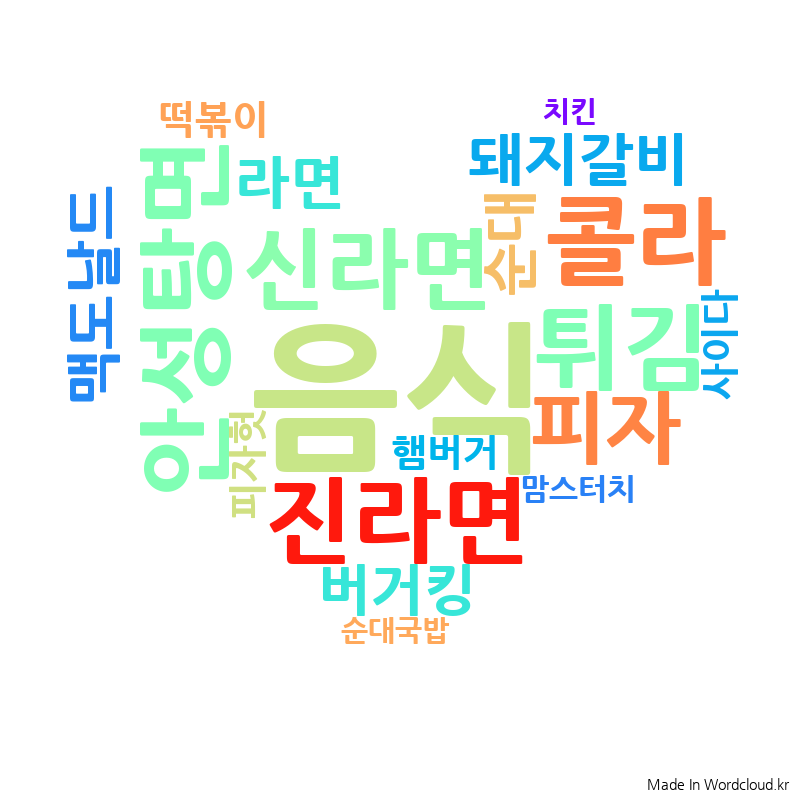
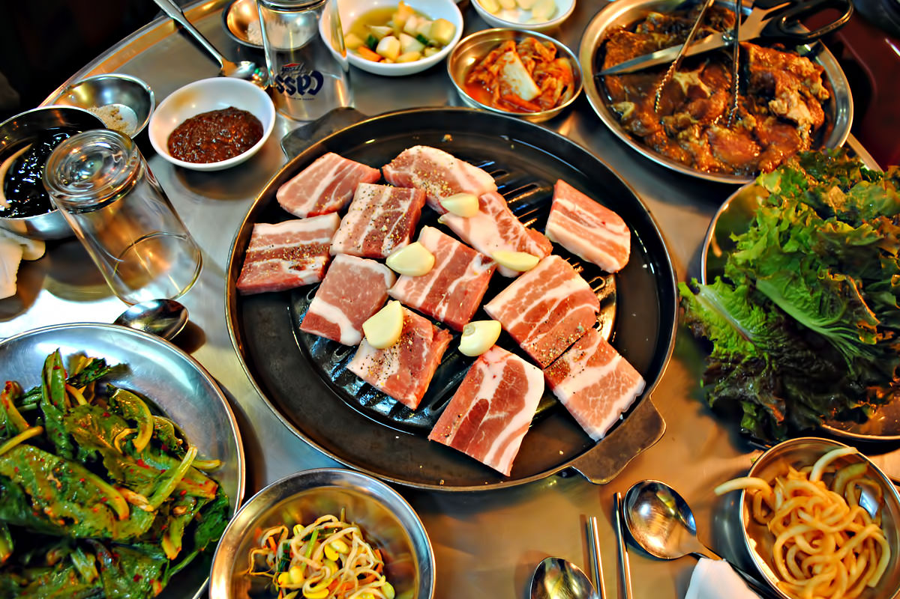
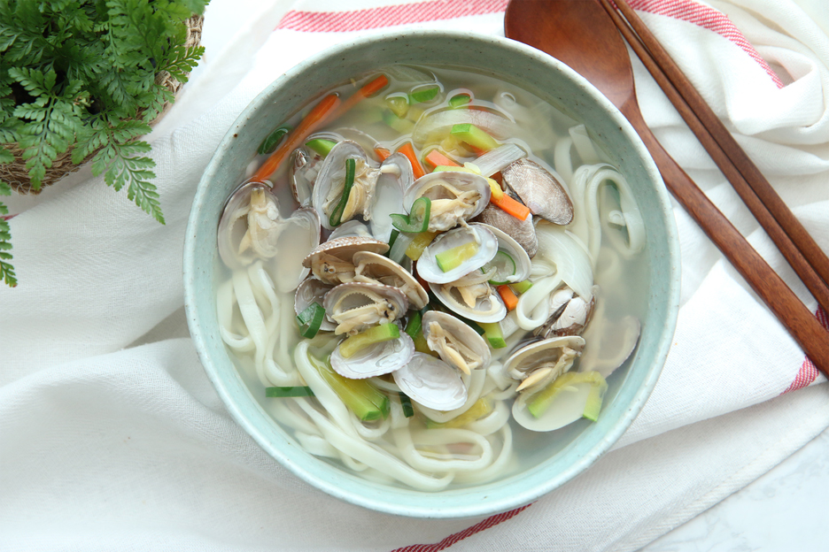

음식
음식이란?

음식에는 두 가지 뜻이 있다. 첫 번째는 인간이 먹음으로써 활동에 필요한 영양분을 얻을 수 있도록 만들어진 사물을 말하며, 두 번째는 인간이 먹고 마시는 행위 자체를 말한다. 그러나 두 번째 뜻은 보통 '식음'이나 '식사'라고 부르고, 일반적으로 '음식'이라고 하면 첫 번째 뜻, 즉 불이나 도구를 사용해 불필요한 부위를 제거하거나 먹기 쉽게 가공한 것을 의미한다. 먹을 수 있는 것 자체를 의미하는 식량과는 포괄하는 범위가 다르다. 생존에 직결되는 만큼 과거부터 매우 중요하게 생각됐으며 인간이 살아가는 데 있어 꼭 필요한 3요소인 의식주(衣食住) 중 하나로 꼽힌다. 인간이 살아가는데 반드시 필요로 하는 에너지[4]를 공급해주는 요소로서 생을 이어가기 위해선 반드시 섭취해야 한다. 따라서 인간에게 식욕은 생존을 위해 필수적인 욕구이다.
가장 좋아하는 음식

삼겹살

햄버거
